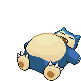

-
Bulbasaur #001

- Grama
- Veneno
Há uma semente de planta na suas costas desde o dia que este Pókemon nasce. A semente cresce lentamente.
-
Ivysaur #002

- Grama
- Veneno
Quando o bulbo em suas costas cresce, parece perder a capacidade de ficar em pé em suas patas traseiras.
-
Venosaur #003

- Grama
- Veneno
Sua planta floresce quando está absorvenso energia solar. Ele permanece em movimento para busca a luz solar
-
Charmander #004

- Fogo
Tem preferência por coisas quentes. Quando chove, diz-se que ovapor jorra da ponta de sua cauda.
-
Charmeleon #005

- Fogo
Tem uma natureza bárbara. Em batalha, ele chicoteia sua cauda de fogo e corta com garras afiadas. Se ficar agitado durante a batalha, ele lança chamas intensas, incinerando seus arredores.
-
Charizard #006

- Fogo
Ele cospe fogo que é quente o suficiente para derreter pedras. Pode causar incêndios florestais soprando chamas.
-
Squirtle #007

- Água
Quando ele retrai seu longo pescoço em sua concha, ele esguicha água com força vigorosa.
-
Wartortle #008

- Água
É reconhecido como um símbolo de longevidade. Se sua concha tem algas, esse Wartortle é muito antigo.
-
Blastoise #009

- Água
Ele esmaga seu inimigo sob seu corpo pesado para causar desmaios. Em uma pitada, ele se retirará dentro de sua concha.
-
Snorlax #010
- Normal
Um dia típico de Snorlax consiste em nada mais do que comer e dormir. É um Pokémon tão dócil que há crianças que usam sua barriga expansiva como um lugar para brincar.